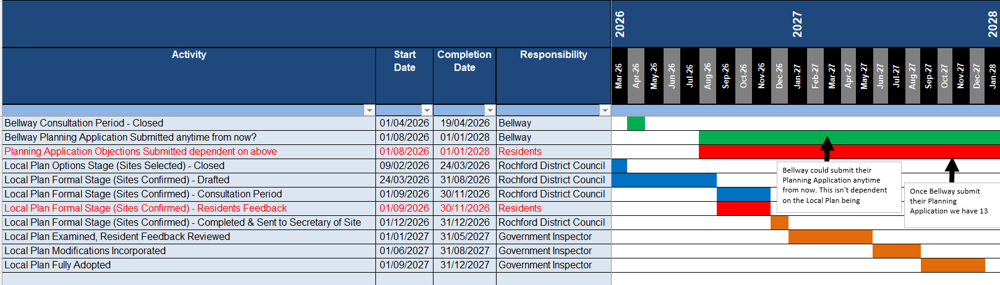

Wyburns
Area
Residents
wyburns-area-residents.org.uk
All Quiet on the Wyburns Front
26th July 2026
Hello fellow residents,
There isn't a great deal to report at the moment regarding the proposed development at Lower Wyburns Farm, Daws Heath Road, Rayleigh.
While things may seem quiet publicly, please be assured that the Wyburns Area Residents Group has been anything but inactive. Behind the scenes, we're continuing to gather evidence, research planning policy, review technical information, and build the strongest possible case against inappropriate development at this site.
A website is currently under construction to make it easier to keep residents informed, share updates, and provide access to key documents and information. The new website can be found here: https://wyburns-area-residents.org.uk/
We're also designing an information leaflet to distribute throughout the local area to raise awareness. However, we're waiting for the right moment to launch it, ensuring it reaches residents when it will have the greatest impact and isn't distributed too early.
The next significant milestone will be the publication of Rochford District Council's outstanding reports and assessments that underpin the Regulation 19 Local Plan on development site allocations. These documents will be crucial, as they form part of the evidence base used to justify the proposed site allocations.
When they are published, it is imperative that residents take the time to read them carefully and scrutinise the evidence. If you identify information that is incomplete, inaccurate, misleading or unsupported by the facts, please make your views known through the consultation process. Well-informed, evidence-based objections can make a real difference, and it is the residents who know this area best.
We strongly encourage everyone to sign up for updates from Rochford District Council so you don't miss any important announcements regarding the Local Plan. You can find out more here: https://www.rochford.gov.uk/the-rochford-district-local-plan
If you would like to volunteer your time to help monitor the progress of the Local Plan, review documents, or keep the community informed as new information becomes available, your help would be greatly appreciated. Many hands make light work, and every contribution helps strengthen our community's response.
We'll keep everyone updated as soon as the documents are released and provide guidance on what to look for and how to respond effectively.
Thank you, as always, for your continued support. Together, we will continue to stand up for our community and ensure that any decisions affecting Lower Wyburns Farm and the surrounding area are based on accurate evidence, proper scrutiny, and the voices of local residents.
Regards,
Wyburns Area Residents Group
Appendix: Rochford District Council Local Plan Timeline
Bellway could submit their planning application anytime from now. However they'd be unwise until Rochford District Council complete at least a Draft version of their Local Plan in December of this year, as the Lower Wyburns site won't have been fully assessed as a probable site until then.
